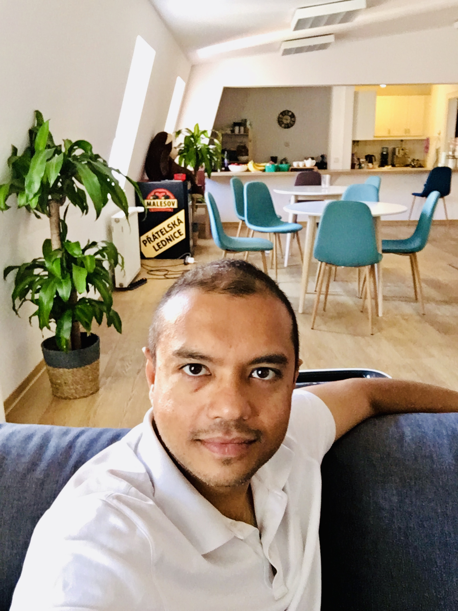

Amit - Bio
Amit Rathore is a 45-year-old serial entrepreneur and angel investor based in San Mateo, CA. Since 2003, he has focused on AI, media, commerce, and FinTech.
He is the founder of AwakeVC, a venture studio focused on co-creating 100 million jobs by enabling 10 million new technology ventures globally.

Connecting the dots:
In 2008, Amit designed and ran a large scale AI called Runa, which was an “Amazon-AI -as-a-Service” for all online retailers of all sizes. By the time Runa was acquired by Staples in 2013, it was used by eBay, Groupon, Staples, and many others around the world. Amit was appointed VP Global e-Commerce and was tasked with applying AI across $20B+ of annual sales.
In fall of 2014, Amit left to start Quintype, another large scale AI that powers the likes of Fortune and Bloomberg. Today it powers billions of monthly page views and social interactions across the Internet, and is projected to cross 1B monthly visitors in 2023, on the way to 2B by 2026.
In early 2019, Amit started AwakeVC, or Awakened Value Co-creation, a tech-enabled Private Equity collective based on the design of a new unique AI innovation called Opentangle, which creates the largest arbitrage opportunity on the Internet, in every industry that leverages distribution channels and commissions-driven sales. Awake harnesses this energy by manifesting an ecosystem of interconnected platforms for the future of work, life, and play, enabling modern consumption - a $100T market globally.
All of “Big Tech” has been built on top of the fact that no one can track attribution across internet platforms. A handful of such companies are now worth multiple trillions of dollars. When you suddenly change the very underlying assumptions, it produces an incredible opportunity to create (and lose) wealth.
Shoptype applies this new approach to seeing contributions of creators and influencers across all platforms of the internet, thereby turning the whole online multiverse into a single interconnected free market, controlled programmatically by anyone who launches a network powered by Shoptype.
Opentangle is akin to a global secure neural network, representing the fundamental untangling of data and intelligence, giving rise to the possibility of knowledge, and to universal consciousness.
Shoptype, Opentangle, and the Intergraph represent a new paradigm of business models.
Amit is a LISPer and wrote Clojure in Action in 2011. During this time in 2012, Amit sold his first AI/ML business to a big American management consulting firm.
In his non-existent spare time, Amit is writing Beyond All Clouds, or How the Actual Internet was Rediscovered, and the iRealization books describing his process of meditation and awakening. Get your copy of Conversations With Consciousness - iRealization Talks, and Conversations With Consciousness - iRealization Pointers here.